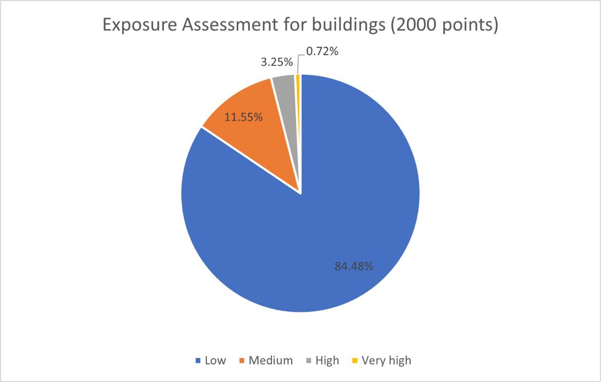

Results
Results of our project
Results
Susceptibility maps
We tested two different point counts: 1000 points and 2000 points as well as for each point count we split the analysis into two different Training/Testing ratios: 70/30 and 80/20. By doing so we run the classification algorithm 4 times on 4 different points datasets getting interesting results. The lowest Overall Accuracy was obtained (as expected) the dataset was composed of 1000 points with a ratio of 70 to 30 (OA = 71%). The highest accuracy was obtained for the same training/testing ratio but 2000 points (OA = 81%). In this case, the hypothesis that a higher point count will lead to better accuracy was proven right. A different situation was observed in the two-point datasets for the 80 to 20 training/testing ratio. In this case, the higher accuracy for the two was obtained for the dataset composed of 1000 points (OA = 79%), and the lower accuracy for the one composed of 2000 points (OA = 76%). As we run just one random sampling for each point dataset it is possible that the dataset of 2000 points for the 80/20 ratio was not enough representative or not perfectly accurate, hence the lower accuracy. Nevertheless, all the obtained accuracies are satisfactory results (all OA > 70%).
1000 points 70:30 ratio
| Thematic_class/Hazard |
0 |
1 |
UA |
PA |
OA |
| 0 |
87 |
25 |
0.78 |
0.58 |
0.71 |
| 1 |
63 |
124 |
0.66 |
0.83 |
|
1000 points 80:20 ratio
| Thematic_class/Hazard |
0 |
1 |
UA |
PA |
OA |
| 0 |
76 |
18 |
0.81 |
0.76 |
0.79 |
| 1 |
24 |
82 |
0.77 |
0.82 |
|
2000 points 70:30 ratio
| Thematic_class/Hazard |
0 |
1 |
UA |
PA |
OA |
| 0 |
241 |
57 |
0.81 |
0.8 |
0.81 |
| 1 |
59 |
243 |
0.8 |
0.81 |
|
2000 points 80:20 ratio
| Thematic_class/Hazard |
0 |
1 |
UA |
PA |
OA |
| 0 |
146 |
44 |
0.77 |
0.73 |
0.755 |
| 1 |
54 |
156 |
0.74 |
0.78 |
|
Exposure assesment
As for the exposure assessment we wanted to analyze the situation for the population as well as for the buildings in the area. (https://www.worldpop.org/geodata/summary?id=17156). We assessed those elements on the Landslide Susceptibility Map, which was the result of the classification with the lowest OA (1000 points 70/30 ratio) and on the one with the highest OA (2000 points 70/30 ratio) to see what are the differences in the exposure assessment. For the map with the lowest accuracy, the exposure assessment for buildings was underestimating the number of buildings in the Low Hazard zones compared to the results for the map with higher accuracy (79.8% for 1000 points versus 84.5% for 2000 points). The Medium Hazard zones, on the other hand, were overestimated. For the High and Very High Hazard zones, both maps gave similar results.
When it comes to the exposure assessment of the population the trends were very similar for the Low and Medium Hazard zones. In this case, though the map with the higher accuracy also estimated about 4% more population living in the Very High Hazard zones compared to the analysis conducted with the lower accuracy map, which underestimated this value. This is a very interesting result showing how important a good model is to estimate the exposure assessment.
Population
1000 points
| zone | m2 | sum | count | min | max | mean |
|---|
| 1 | 11111813.92 | 2592.734029 | 1666 | 0 | 43.77936172 | 1.55626292 |
|---|
| 3 | 27879581.13 | 137.243247 | 4180 | 0 | 25.52749825 | 0.03283331 |
|---|
| 4 | 27412698.19 | 32.32782893 | 4110 | 0 | 25.02367783 | 0.00786565 |
|---|
| 2 | 25104962.53 | 713.3600788 | 3764 | 0 | 42.53991318 | 0.18952181 |
|---|
2000 points
| zone | m2 | sum | count | min | max | mean |
|---|
| 4 | 32548410.4 | 154.349227 | 4880 | 0 | 41.52126312 | 0.03162894 |
|---|
| 3 | 24524693.66 | 81.8856007 | 3677 | 0 | 25.02367783 | 0.02226968 |
|---|
| 2 | 22016865.31 | 453.2804862 | 3301 | 0 | 34.96487427 | 0.13731611 |
|---|
| 1 | 12419086.1 | 2786.14987 | 1862 | 0 | 43.77936172 | 1.49632109 |
|---|
Buildings
1000 points
| zone | m 2 | sum | count | min | max | mean |
|---|
| 1 | 11105144.16 | 221 | 1665 | 0 | 1 | 0.13273273 |
|---|
| 2 | 25104962.53 | 44 | 3764 | 0 | 1 | 0.01168969 |
|---|
| 4 | 27412698.19 | 2 | 4110 | 0 | 1 | 0.00048662 |
|---|
| 3 | 27879581.13 | 10 | 4180 | 0 | 1 | 0.00239234 |
|---|
2000 points
| zone | m2 | sum | count | min | max | mean |
|---|
| 1 | 12732564.68 | 234 | 1909 | 0 | 1 | 0.12257727 |
|---|
| 2 | 21683377.57 | 32 | 3251 | 0 | 1 | 0.00984313 |
|---|
| 4 | 32501722.21 | 2 | 4873 | 0 | 1 | 0.00041042 |
|---|
| 3 | 24584721.54 | 9 | 3686 | 0 | 1 | 0.00244167 |
|---|
